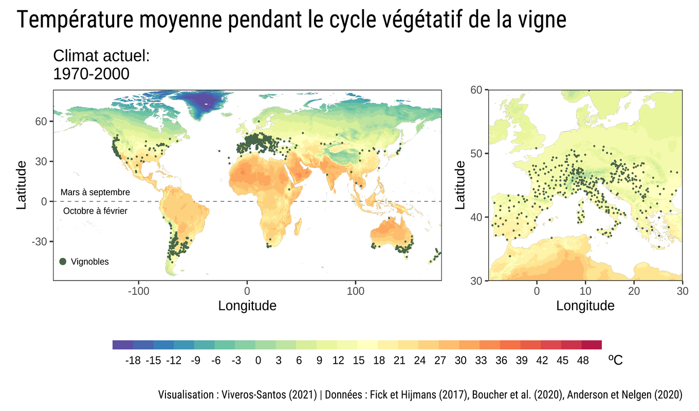

Quel vin fera-t-il demain ?
Les aires viticoles et la question de l’adaptation au changement climatique
üîé Veuillez cliquer sur une image pour l‚Äôagrandir.
À l’échelle globale, les conditions thermiques favorables à la culture de la vigne se trouvent entre les isothermes de la température moyenne annuelle 12-22 °C durant la période de croissance de la vigne, de mars à septembre dans l’hémisphère nord et d’octobre à février dans l’hémisphère sud (Dougherty 2012). En raison de la sensibilité du raisin à des variations de la température, le changement climatique peut entrainer des impacts sur le rendement, la qualité de la récolte et même sur la distribution géographique future des vignobles (Mozell and Thach 2014). Des études ont rapporté que l’avancée des dates de vendanges en Bourgogne (Chuine et al. 2004) et dans d’autres vignobles européens (Jones et al. 2005) est un indicateur des impacts déjà observés du changement climatique en viticulture.
S’adapter à un monde plus chaud

Des sécheresses plus fréquentes à l’avenir

Selon l’impact prévu du changement climatique sur la qualité des raisins et du rendement, ainsi que des conditions environnementales futures, les vignerons seront amenés à mettre en place des stratégies d’adaptation qui pourraient entrer en compétition avec des stratégies de mitigation (Quénol 2014). D’où la nécessité de les évaluer dans une perspective de cycle de vie.
De plus, dans le contexte du changement climatique, l’impact environnemental des substances chimiques peut être modifié, voire exacerbé. En effet, un groupe de travail Pellston organisé par la SETAC a discuté l’influence du changement climatique sur les bases scientifiques et les applications de l’écotoxicologie. Ce groupe de travail conclut que le changement climatique peut modifier la capacité des êtres vivants à répondre à la présence des substances toxiques dans l’environnement et à l’inverse, la présence des polluants peut perturber des processus d’acclimatation aux changements climatiques (Stahl et al. 2013).
Mon projet de recherche vise à évaluer l’influence du changement climatique sur l’écotoxicité du cuivre, un métal faisant partie de la bouillie bordelaise, un mélange largement utilisé pour combattre le mildiou.
üìçLes donn√©es sur les vignobles √† l‚Äô√©chelle mondiale ont √©t√© r√©cup√©r√©es de Anderson and Nelgen (2020).
üó∫ Les donn√©es climatiques historiques et futures ont √©t√© r√©cup√©r√©es des travaux de Fick and Hijmans (2017) et Boucher et al. (2020), respectivement.
À propos de l’auteur

Ivan Viveros Santos est candidat au doctorat en génie chimique, il est affilié au CIRAIG, Polytechnique Montréal et au CIRODD. Il est supervisé par: